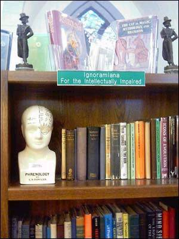
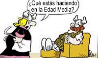
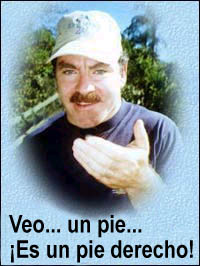
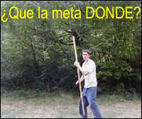

¿Su misión?
Señor Phelps: Las siguientes 572 palabras han sido extraídas de una masa de incoherencias publicada por un grupo de curanderos que promete alivio para la artritis, migráneas, hipertensión, dolor (espaldas, hombros, rodillas, etc.), alergias, asma, enfermedades emocionales, síndrome de Retts, mal de Parkinson, stress, depresión maníaca (trastorno bipolar), tendonitis, lesiones deportivas, síndrome de fatiga crónica, enfermedades autoinmunes, fibromialgia, menopausia, síndrome premenstrual, vértigo y trastornos digestivos. Esto, según dicen, se logra con una máquina que se conecta a su propia computadora. Su misión, si decide aceptarla, es: parte de lo que sigue proviene realmente de esta gente, y revela los “secretos” de cómo funciona su sistema. Otra parte la he creado yo mismo y no tiene ningún sentido. Distíngalas. Son siete párrafos, de los cuales uno o más son míos.
Cuando la vida se forma hay una coexistencia: el cuerpo físico aparece en el mundo que observamos como nuestra realidad física, y nuestra mente y nuestro subconsciente residen en un lugar llamado el Afísico. Por lo tanto, nuestra coexistencia tiene lugar en dos dimensiones: la Física y la Afísica.
Para establecer una comunicación entre la Dimensión Física y la Dimensión Afísica se requiere la capacidad de abrir un Portal dentro de una Fisura Dimensional. Este Portal no es de naturaleza singular, sino que consiste en un conjunto complejo de puertas. La razón por la que el Portal ha eludido a la ciencia es que no hay energías activas reconocibles. La entrada y salida a través del Portal se basa en vibraciones. Estas vibraciones (fonones) ocurren a un nivel atómico que difiere del modelo físico aceptado estándar, pero no lo contradicen. Además, este Estado Fonónico no depende del estado energético o la carga del átomo.
El Estado Fonónico es un modelo pasivo relacionado con el diámetro del átomo y/o la molécula. Como todos sabemos, las moléculas se expanden con la temperatura. Para simplificar esto por el momento, observemos esta reacción en un elemento singular. En un elemento singular, podemos calcular el espaciado mecánico usando dos fórmulas. Primero tenemos que calcular la cantidad de un átomo determinado para una distancia específica.
Un elemento (o molécula) puede abrir el portal entre las Dimensiones sólo bajo las siguientes condiciones selectas. Esto ocurre solamente cuando alcanza la Resonancia Fonónica de otro elemento (o molécula). Esto ocurre solamente calentando o enfriando el elemento/molécula inicial. Todo elemento y molécula tiene una Resonancia Fonónica distintiva. Sin embargo, para abrir el Portal no se requiere que la secunda molécula esté presente. De hecho, hay casos en los que se forma un nuevo elemento a partir de la Resonancia Fonónica. Esto depende del lado del Portal en que se concentren las energías.
Por lo tanto, el Portal es por completo dependiente de la energía (temperatura). Para determinar cómo un átomo [o molécula] cambia su Resonancia Fonónica con la temperatura, deben aplicarse ciertos estándares. Pues a medida que un grupo de elementos similares se calientan o se enfrían, éstos se dilatarán o contraerán según una razón determinada. Esta razón es conocida como coeficiente de dilatación [CD]. Otro estándar es la Temperatura Estandarizada [TE]. Así, a medida que la temperatura aumenta, la Resonancia Fonónica disminuye. Esto se explica en la siguiente fórmula.
La apertura de un Portal en relación al Cuerpo Humano se aplica a partir la Constante Fonónica del Código de ADN de un paciente en el Universo Celular. Cuando el Operador de la Tecnología ADAM se conecta con el paciente por teléfono, se establece una conexión Física. Una vez que esto ocurre y se establecen las conexiones en la computadora, puede establecerse una comunicación entre el Operador, ADAM y el Paciente. Esta conexión requiere la voluntad del Paciente y la concentración del Operador.
El Portal reacciona al Código de ADN reflejando, a través de una Resonancia generada por un cambio de temperatura, una imagen codificada de ADN única del Paciente, y permite que esos patrones atraviesen la Entrada, lo cual dispara una Descarga del Portal. Así, un aumento de la temperatura, independientemente de cualquier variación fonónica monoelemental, establece y reacciona a la introducción de un segundo elemento, y el patrón del elemento inicial se mantiene. El calentamiendo o el enfriamiento se concentra en la Descarga del Portal y provee las instrucciones necesarias.
NOTA: Les solicito que lean los párrafos anteriores, y luego consideren seriamente el problema de distinguir los disparates. Obviamente, una búsqueda por computadora resolverá rápidamente el problema, pero los insto a considerar realmente el contenido simplemente leyéndolo, y ver si pueden determinar qué parte(s) es/son mía(s). Y por favor: no me envíen la respuesta; la publicaré la próxima semana. Esto es apenas un ejercicio para demostrar que no es posible distinguir las incoherencias pseudocientíficas de otras incoherencias inventadas intencionalmente. Estamos en el sistema de honor; intentar este pequeño proyecto ilustrará efectivamente cuán despreciable es esta “ciencia”, y cuán despiadados son los responsables de la estafa.
Como era de esperarse, en el Web site aparece el descargo legal de rigor, dictado por costosos abogados en un intento de protegerse de cualquier demanda:
Los científicos del Galaxy Wave Group no son doctores en medicina. Los operadores de la tecnología ADAM no diagnostican, tratan, previenen ni curan ninguna condición médica, psicológica o emocional. Estas declaraciones y la Tecnología ADAM no han sido examinadas ni aprobadas por la FDA ni otra agencia u autoridad gubernamental.
Parte de su pregón es:
Revertimos los síntomas del autismo, trastornos del espectro de autismo, síndrome de Aspergers, ADD 1 , ADHD 2 , trastornos de retraso en el desarrollo y muchas incapacidades de aprendizaje. Tenemos un programa probado que devuelve la normalidad a niños y adultos autistas. Hemos devuelto el habla a muchos que no se habían comunicado desde su vacunación
Aseguran hacer esto con la aplicación de:
… un módulo orgánico conectado a una computadora que se comunica por medio de un lenguaje C+ visual. La computadora se llama ADAM: Aphisical Dimensional Access Manager (Administrador de Acceso Dimensional Afísico).
Y:
Éste es un programa educativo transmitido por Internet, en conjunción con una nueva forma de comunicación telepática.
Observen que se culpa a la vacunación por el autismo, un popular concepto de la curandería. Hay mucho más, de lo cual se extrae lo siguiente:
ADAM, mecánica cuántica y metafísica.
… La máquina ADAM abre una fisura dimensional que permite una comunicación directa entre la máquina y la otra dimensión. Un plasma líquido que está en el centro de la máquina ADAM facilita la comunicación entre las dimensiones. Un campo electromagnético único que rodea el plasma permite que algunas porciones de éste se vuelvan “no locales” a través de la fisura dimensional. La comunicación entre el plasma local y el “no local” es el enlace de comunicaciones entre las dos dimensiones. Una sonda de platino y varias sondas de oro insertas en el plasma miden los cambios de frecuencia y voltaje varios miles de veces por segundo. Estas mediciones de frecuencia y voltaje del plasma son ingresadas en el programa de computadora que desempeña funciones de monitoreo y control en la célula de plasma.
El enlace establecido entre las dimensiones permite comunicaciones bidireccionales. La información se envía y se recibe a través de la fisura dimensional.
… se dan instrucciones para localizar las porciones “no locales” de la mente subconsciente de un individuo y comunicarse con ellas… La información que se envía desde la computadora contiene instrucciones para la mejoría física del individuo. La información recibida se convierte, por medio de un complicado algoritmo matemático, en números y una representación gráfica de la fuerza y efectividad de la conexión del subconsciente “no local”.

Esto es simplemente basura concentrada. Son sandeces juveniles e irracionales, al estilo Buck Rogers. Su “plasma líquido” no existe, y es un conflicto terminológico en sí mismo. La “Fisura Dimensional” es ficticia, un invento imaginario. Los “Fonones” y el “Portal” son tonterías juveniles sacadas de los comics. Como para probar su profundo conocimiento de mi reacción a todo este galimatías, siguen diciendo:
El método de operación de la interfaz de la tecnología ADAM puede parecerle a alguna gente alguna clase de falsedad metafísica.
Luego citan personalidades reconocidas —fuera de contexto, por supuesto—:
Mientras intenta entender esto, recuerde la famosa cita de Arthur C. Clarke: “Cualquier tecnología suficientemente avanzada es indistinguible de la magia”. Refiriéndose a la mecánica cuántica y a fenómenos físicos “no locales”, el Dr. Richard Feynman escribió: “Ya ve que mis estudiantes no lo entienden… Es porque yo no lo entiendo. Nadie lo entiende.”
La Dra. Nataliya Dobrova, listada como Directora de Parapsicología del Galaxy Wave Group, nos cuenta que con su sistema:
Se hacen diagnósticos y correcciones al equilibrio bio-energético de una persona a cuatro niveles diferentes: Estado Emocional, Celular, Energético y Bio-energético… Actualmente, el Programa para Autismo ADAM consiste en programas basados en Internet y en el teléfono. Además, es útil señalar que la Tecnología ADAM se combina bien con otros tratamientos, tales como la terapia farmacológica, masajes, homeopatía, etc.
Qué tranquilizador. ¡Parece que esta forma de curanderismo está avalada por otras formas más firmemente establecidas de curanderismo! Y, en caso de que las víctimas potenciales queden pasmadas por sus incoherencias, aseguran al lector:
Puede consolarle saber que no se requiere que una persona entienda o crea que la explicación de la operación de la tecnología ADAM es verdadera o siquiera posible.
Bueno, ni lo entiendo ni lo creo, y sé que son meras insensateces, pseudociencia, ciencia ficción y curanderismo. Maldición, pruébenmelo, un solo caso, y obtendrán el premio de la JREF: ¡UN MILLÓN DE DÓLARES! No, no reaccionarán a esto, porque son farsantes. ¿POR QUÉ LAS AUTORIDADES FEDERALES NO HACEN NADA AL RESPECTO? ¿Y POR QUÉ ESTOY PERDIENDO MI TIEMPO Y MI DINERO HACIENDO ESTAS PREGUNTAS INFRUCTUOSAS? ¡NO LES IMPORTA, Y NO RESPONDERÁN!
Los lectores puede ver toda esta cháchara en http://www.galaxywave.com.
Redefiniendo por claridad
El lector Chris Pitcher, de Nottingham, Inglaterra, nos aclara un problema:
Es posible creer en los psíquicos, la homeopatía, Dios, la rabdomancia, la reencarnación y probablemente muchas otras cosas. Todo es cuestión de hallar las definiciones correctas:
Psíquico: Persona con la habilidad de la lectura en caliente y en frío.
Homeopatía: Combinación de remisión espontánea y efecto placebo.
Dios: Antropomorfización de la naturaleza.
Rabdomancia:
1. Habilidad para encontrar algo cuando se sabe dónde está. 2. Habilidad para leer el lenguaje corporal de otra persona que sabe dónde está. 3. Habilidad para encontrar algo que está en todas partes.
Reencarnación: Proceso por el cual se hace referencia a dos cuerpos separados sin recuerdos en común como si fueran la misma persona.
Y Chris agrega un chiste por el mismo precio:
P: ¿Cuántos homeópatas hacen falta para cambiar una bombilla?
R: 0,00000000000000000000000000000000000001
¿Canadá no evoluciona?
Un lector canadiense ha hecho un descubrimiento perturbador. Nos dirige a http://www.weeklyworldnews.com/news/index.cfm?instanceid=61473.
Al principio, cuando comencé a leer el artículo, no pude evitar sonreir. Después de todo, ésta es la misma revista que presenta “noticias” como “Su esposa podría ser un extraterrestre” o “Bélgica es destruida por asteroide errante”. Pero luego empecé a caer lentamente en la cuenta de que el autor de este artículo, sin importar si cree sinceramente o no lo que escribe, expresa exactamente el mismo sentimiento que comparten millones, tal vez cientos de millones, de otras personas.
Lo que me ha hecho pensar en esto fue una conversación que tuve hace poco con mi cuñado de 18 años. Debo decir que siempre he estado orgulloso de vivir en Canadá, donde el debate evolución/creación, que yo sepa, nunca ha sido un tema. Pero cuando hablé con él del asunto, no pudo recordar que le hubieran explicado la evolución en la clase de ciencia. ¡Y está estudiando biología!
Esto me dejó intrigado, así que hice una pequeña encuesta entre amigos y familiares para ver cuánto sabía la gente que me rodeaba sobre este fenómeno científicamente aceptado. La respuesta es avergonzante. Aunque casi todos los que conozco, con unas pocas notables excepciones, aceptan que la evolución es un hecho, ni uno solo pudo decirme nada acerca de ella. Y cuando tomaba la posición de “abogado del diablo” y esgrimía algunos de los principales argumentos creacionistas, la respuesta que obtenía sugería que por lo menos la mayoría de ellos se dejaba persuadir fácilmente por una sugerencia convincente, pero falsa. Parece que Canadá ha eludido el debate simplemente absteniéndose de enseñarle a los estudiantes de secundaria de dónde venimos. Después de todo, ¿no es ahí donde empezamos a preguntar?
Yo conocí muy bien la evolución por medio de mis profesores de ciencia de secundaria en Canadá. Amigo, te han tomado el pelo, si es que sencillamente no te han robado.
Computadoras embrujadas
El lector Denis O’Leary, de Irlanda, nos da una bienvenida explicación técnica de algunos embrujos comunes:
Su reciente comentario (16 de abril) del hombre que “desmagnetiza” computadoras me recordó una consulta similar que nos hizo una clienta. Yo trabajo en un pequeño negocio de reparación de computadoras y habíamos instalado una en su casa. Unos días después llamó preocupada porque la computadora se encendía sola, aun cuando ella había accionado el imterruptor y la había visto apagarse. Preguntó, bromeando a medias, si no estaría embrujada.
Luego de unos minutos de rascarnos la cabeza, lo resolvimos. Hay un seteo que permite a los administradores de red iniciar la computadora cuando se conectan, y se activa cada vez que se hace una llamada a la línea telefónica. Para los que saben de tecnología, es un seteo del BIOS llamado “Wake on Modem”. Normalmente está deshabilitado, pero algunas máquina debieron ser despachadas con el seteo habilitado, puesto que tuvimos otro caso la semana siguiente.
Pero es entretenido ver cuántas personas culpan a lo sobrenatural por los problemas con los equipos electrónicos cuando la realidad es mucho más aburrida. Leí una discusión en Internet en la que se decía que los fantasmas eran responsables de que una impresora expulsara hojas completas con sólo una letra en cada una. Sucede exactamente lo mismo si se carga el software de impresora equivocado, pero entonces no se consigue ni la mitad de la atención. Si su pantalla parpadea, échele la culpa al fantasma local y no al teléfono móvil que está sobre la computadora. ¿Recibe correo extraño de usted mismo? Se parece más al virus Klez que a cualquier mensaje del mundo espiritual.
Sin embargo, yo mismo caí una noche. Estaba leyendo sitios Web sobre fantasmas, cuando oí un gemido sobrenatural que provenía de mi computadora. Varios segundos después, cuando se me empezaban a pasar los escalofríos, advertí la fuente del sonido. La página Web tenía un pequeño archivo de sonido que se cargaba cada vez que accedía a ella. Esto es sólo para mostrar que incluso los escépticos pueden asustarse de vez en cuando.
Y eso incluye a los escépticos bien informados, por lo que veo. ¡Los duendes están trabajando!
¡Cuidado con esa ropa interior!
El lector Chris Duff, de Londres, Reino Unido, sugiere una posible solución al mismo problema del “hombre magnético”, como también hicieron varios otros lectores:
Hace algunas décadas, era algo muy común que se dañara el equipamiento electrónico y los medios magnéticos de almacenamiento, y por lo general se descubría que era debido a descargas de electricidad estática en oficinas mal diseñadas. Bien podría ser esto lo que causa los efectos que ese “hombre magnético” observa (16/04). En un caso clásico (¿en IBM?) se identificó como un problema particular ¡la combinación de alfombras de nylon y mujeres con ropa interior del mismo material! Sugiero que si a su lector anónimo le preocupa cómo manejar a los clientes con creencias extrañas, sería mejor evitar por completo la situación interrogándolos acerca de la composición material de su ropa interior antes de tomarlos como clientes.
Chris, ¿estás sugiriendo que el Hombre Magnético usa lencería? Tal vez tenga algún interés limitado, pero no es específicamente pertinente al trabajo de la JREF.
Con tiempo suficiente y un poco de seso
El lector Tom DeZego, de Richmond, Virginia, tuvo su propia epifanía y no ha regresado desde entonces.
La semana pasada estaba en la librería Heritage de Virginia Beach; es un negocio de New Age/salud holística/astrología/etc., con las usuales cartas de tarot, libros sobre ángeles, etc. etc. Parece que al menos uno de estos establecimientos se está volviendo un poco más abierto de mente: en los estantes de revistas estaban los últimos números de Free Inquiry y Skeptic. Mi descubrimiento me sorprendió por completo, y me impresionó un poco. Nunca pensé que un negocio así vendería tales revistas. No vi si también tenían libros escépticos, como el suyo o el de Michael Shermer, pero lo dudo. Un paso a la vez.
En una visita anterior (el negocio también vende comida y otras cosas), bromeé con mi novia que debería ir al mostrador y preguntar si tenían la Skeptical Inquirer, el último tomo de Michael Shermer o los libros de usted. Claro que no lo hice. Pero, cuando advertí que en una mesa tenía lugar una sesión de tarot, le dije por lo bajo a mi novia: “Le predigo que muy pronto será unos veinte dólares más pobre”, refiriéndome a la persona a la que le tiraban las cartas. Uno de los psíquicos me oyó y me acusó de ser cínico. Le di poca importancia y respondí: “Ése soy yo… el señor Cínico”. (Soy de Brooklyn, NY, así que tengo una veta cínica natural.)
Tengo buenas razones para ser cínico y cauto con los psíquicos, etc. Yo fui uno de ellos. Estudié con un maestro místico: astrología, tarot, Kaballah y otras cosas. Lo hice hasta que algo en mi interior me dijo que me alejara.
He querido escribirle al respecto, pero probablemente ya ha oído todo eso. Lo que no me gustaba era el sutil control mental. En nuestra última conversación, mi “gurú” me dijo que era demasiado independiente y que me iría muy mal si dejaba su tutela. Esto último me molestó por un tiempo, pero ahora veo que sólo era más de su control mental, y me alegro de haberme ido. Luego del 9/11 busqué sitios Web, libros y revistas escépticos, teniendo ya suficiente de tonterías religiosas, psiquismo y pensamiento mágico. He leído sus libros y leo con frecuencia revistas y libros escépticos para educarme sobre lo que sucede realmente en el campo de la experiencia humana, y sobre las cosas con las que algunos se salen desvergonzadamente con la suya: Sylvia Browne, John Edward y todos los demás.
Bienvenido a casa, Tom. ¡Pero la próxima vez, pregunta por Skeptical Magazine y Skeptical Inquirer en esos negocios! Aunque sólo sea para oírlos bufar y resoplar.
Hablando de libros, nuestro buen amigo Donald Simanek (http://www.lhup.edu/~dsimanek) me envío esta foto que tomó en el Sanctuary Antique Center de Marion, Iowa. El librero Gary L. Wallin preparó este recordatorio para alertar a sus clientes [#cartel] . ¡Muy bien, Gary!
Una respuesta práctica
Un lector de Vancouver, Columbia Británica, Canadá, escribe:
Hace poco compré el juego de DVDs “Penn and Teller: Bullshit!”, tengo su libro “Enciclopedia…”, soy suscriptor de Skeptical Inquirer, y ¿quién puede olvidar su aparición en “Los días felices”? En otras palabras, aprecio mucho su trabajo. Me alegro de tener la oportunidad de enviarle un e-mail y hacerle un par de preguntas.
Mi mamá, quien tiene 70 años, es fanática de Sylvia Browne desde hace un tiempo y cree en toda la basura que ella reparte. He descubierto que cuando hablo de las mentiras de los psíquicos y de SB, eso parece molestarla de una manera más personal. Supongo que cuando critico a SB lastimo sus creencias, y desacreditar a SB hace que toda la emoción y el tiempo que invirtió en esta loca le hagan daño. No sé si es realmente necesario hacerla cambiar de opinión, puesto que no creo que gaste en sesiones psíquicas, solamente algún libro ocasional de SB.
A nadie le gusta que le demuestren que se equivoca, especialmente cuando ha defendido abiertamente una creencia. Puede ser avergonzante y deprimente. No excuso la ignorancia, pero quizás a la su edad no necesita que se le llame la atención. Sé que usted no me conoce a mí ni a mi familia, pero su opinión es importante. Estoy seguro de que ha debido tratar en persona muchas veces con estas situaciones.
Yo respondí:
Teniendo yo mismo 75 años, no creo que alguien de 70 sea senil, pero pienso que ha tomado la decisión correcta. Odio ver que una moneda vaya a las manos de Browne, pero por lo menos una buena parte llega a otros antes de que ella obtenga lo que queda. Por favor, tome todas las medidas para asegurarse de que su mamá no invierta en una sesión. No sólo se desperdician más de USD 700, sino que las implicaciones emocionales y la dependencia resultantes podrían lesionarla y causar mucho daño familiar.
Gracias por preguntar
Acorah tropieza un poco más
El lector Chris Burnett, de Colchester, Inglaterra, comenta un programa de TV del que nos ocupamos hace poco:
Con respecto a su artículo sobre Most Haunted, pensé en compartir mi momento favorito del (sorprendemente soportable) programa. Al señor Derek Acorah [el “medium”] le mostraron un cráneo agujereado en la parte superior que se había encontrado en un viejo pub. Entonces inició una rutina frenética, explicando que una niña de la Edad Media había sido asesinada con una punta de metal, y procedió a recrear su muerte por medio de la danza. Entonces apareció en pantalla una leyenda que decía que el cráneo había sido fechado por carbono, y se descubrió que databa de tiempos vikingos.
¿Hablábamos de de perder todo el respecto por un hombre en segundos?
La próxima semana, tendremos un informe de nuestro diligente corresponsal Jez Wood sobre el “progreso” de esta tambaleante serie.
Cae otro OVNI
Los invito a que visiten http://www.nasa.gov/vision/space/travelinginspace/no_ufo.html para experimentar cuán satisfactoria puede ser una investigación adecuada y responsable. Esto echa por tierra otra causa célebre que los fanáticos de los ovnis han estado festejando. ¿No es delicioso?
Otro Adam
El lector Robert Matthews, de Halifax, Nova Scotia, Canada, nos cuenta:
Supongo que esto es una pequeña ironía: Hoy estaba sentado en el consultorio de mi doctor, hojeando un número reciente de Maclean’s (una revista canadiense no muy distinta de Time o Newsweek), cuando me crucé con una nota escandalosamente acrítica sobre un “sanador” de Vancouver, Columbia Británica, llamado simplemente Adam. El artículo, que tenía forma de entrevista, simplemente parecía dar por descontado que este chico de 17 años puede hacer lo que dice, esto es, sanar a cualquiera, en cualquier lugar, de cualquier enfermedad. Parece ser la misma vieja palabrería de Edgar Cayce, vestida con palabrería New Age sobre mecánica cuántica. (A mí me parece además que si una sola persona en la Tierra pudiera hacer lo que este Adam asegura, yo no habría estado sentado en un consultorio médico.)
En su sitio web http://www.dreamheales.com hay un descargo de responsabilidad severamente legalista, el cual debe firmar y fechar todo el que desee recibir tratamiento. (No pude evitar notar que este documento presumiblemente legal contiene varios errores de tipeo, los cuales por lo que sé —no soy abogado— lo invalidan.) Éste es el último párrafo de lo que el paciente debe firmar:
Yo, el abajo firmante, por mí mismo, mis herederos, sucesores, causahabientes, administradores y apoderados, por la presente libero y descargo a perpetuidad a Adam, sus asociados, sus herederos, sucesores, causahabientes, administradores y apoderados, de toda acción, causa de acción, reclamo y demanda por causa o razón de cualquier daño, pérdida o lesión a personas y propiedades que hayan surgido a la fecha o puedan surgir en el futuro como consecuencia de cualquier medicación, sustancia o tratamiento que yo pueda usar o consumir, en todo aspecto y por cualquier iniciativa mía propia o de otra persona en mi nombre, que cause alivio temporal o permanente de cualquier síntoma, padecimiento o enfermedad que se me haya diagnosticado o se me diagnostique en el futuro.
Bueno, eso está muy bien dicho, pero si se me permite parafrasear:
“Si mejoro, es por Adam. Si pasa cualquier otra cosa, es mi culpa.”
Robert, te asombrará saber que este Adam ha decidido no postularse para el premio de un millón de dólares de la JREF. Parece algo extraño, n’est-ce pas?
Otra tumba luminosa
El lector William Rentfrow nos cuenta su propia historia sobre una “lápida luminosa”. Esto fue recibido un día antes de que se publicara la página de la semana pasada.
En su comentario del 16 de abril, usted menciona la tumba luminosa cerca del final, y dice que la cubrirá en el siguiente comentario. Pensé que podría ser relevante contar mi propia historia sobre una lápida luminosa.
Cuando estaba en la secundaria, se consideraba muy divertido ir a ver “La Tumba Luminosa”. Estaba ubicada en el cementerio de una pequeña iglesia rural del norte de Minnessota, cerca de mi pueblo nada de Roseau. La tumba era un pedazo viejo y espectacular de granito. La base era un cubo de unos 60 centímetros de lado. De éste se elevaba una columna de unos veinte centímetros de diámetro hasta una altura de más de dos metros. Era de granito oscuro, muy pulido.
Abundaban las historias sobre por qué la tumba brillaba. Se pueden listar muchas, pero abarcaban toda la gama de espíritus inquietos, etc. Los escépticos eran rápidamente silenciados cuando se los llevaba de noche. El cementerio estaba atravesado por un camino circular, y si alguien se paraba sobre el círculo, enfrentado a la tumba, ésta brillaba con el verde más espeluznante que se haya visto. En ese entonces me hacía morir de miedo. Incluso hoy llevo personas para mostrarles el efecto, y enloquecen. He visto algunos que se ponen a rezar y una chica llegó a asustarse tanto que gritaba “¡Vámonos! ¡Vámonos!”. Por suerte, después de la secundaria me volví más escéptico y decidí echarle una buena mirada al asunto. Había varios hechos que quería verificar:
1) La tumba misma parecía ser de granito normal. Si alguien se le acercaba de noche no brillaba.
2) El brillo era visible desde un único punto del cementerio. Si la tumba estaba en el centro de un círculo, sólo unos cinco grados de arco permitían ver el “resplandor”.
3) El brillo era verde. Las únicas luces visibles de noche en la iglesia eran una cruz iluminada de azul y una luz blanca de patio.
El último punto era clave. Nosotros (llevé a un par de amigos) andábamos casualmente por allí durante una tormenta eléctrica en la que se cortó la luz en el pueblo. Fue entonces que dedujimos que lo que ocurría no tenía absolutamente nada que ver con las luces de la iglesia. En lugar de eso, a unos cuatrocientos metros había una granja con una luz de mercurio —alimentada por otra fuente eléctrica— de un color verde blancuzco. El granito pulido reflejaba perfectamente esta luz difusa, pero sólo en una dirección debido a los ángulos de la tumba y la ubicación de las luces. Misterio resuelto.
Lo que es triste es que estoy 100% seguro de que los chicos siguen yendo allí y pensando que es un enorme misterio. Si hubiera sido más escéptico desde el comienzo, no habría demorado más de 10 años en conocer la verdad.
Un pensamiento final: ahora que he revivido esto, desearía que me hubieran enseñado a examinar críticamente las situaciones mientras crecía. En lugar de eso, tuve que aprenderlo yo mismo. Es triste que la gente (incluyéndome a mí mismo cuando era joven) se incline a creer cosas fantásticas cuando es probable que un examen minucioso de la evidencia disponible explique el misterio.
Bien, lo lograste de todas formas, William. ¡Quédate con nosotros!
Van Praagh sigue esforzándose
La lectora “Lisa” escribe:
Pensé en compartir una experiencia que tuve hace poco, aunque estoy segura de que es una repetición de historias que usted ya ha oído muchas veces… El viernes 16 de abril estaba conduciendo mi coche, oyendo el programa sindicado “Mancow’s Morning Madhouse”. Esa mañana, uno de los invitados era James Van Praagh. Llamó una oyente que quería saber qué le había sucedido a su hermano, diciendo que sospechaba que había sido asesinado en los ochenta, aunque la policía decidió que era un suicidio.
James procedió a lo que yo llamo una WAG (wild-ass guess) 4 . “Veo un coche”, dijo. La oyente respondió que no, que no sabía nada de ningún coche. James insistió que veía un coche, pero enseguida cambió a “veo una pistola”. La mujer quedó atónita y dijo que sí, que a su hermano le habían disparado. Desde mi punto de vista, a juzgar por la edad de la oyente (parecía tener unos cuarenta años) en combinación con la información que ya había suministrado, yo habría arriesgado “pistola” en primer lugar, puesto que los jóvenes tienden a dispararse cuando intentan suicidarse.
Randi comenta: por favor, observen que Van Praagh está usando la técnica de “indicios”, diciendo que “vio” un coche, y luego una pistola; y más adelante dice que “ve” la letra M. Es una sugerencia para que la víctima identifique la situación y haga una conexión. Un coche de cualquier color o tamaño, en cualquier momento, en cualquier lugar, un coche policial o un vehículo particular de cualquier persona, de cualquier marca y modelo, satisfaría tal indicio. Lo mismo cuenta para la pistola. Se espera que la víctima suministre una conexión.
Van Praagh dijo luego —¡no miento!— “veo la letra M”. Puesto que había visto esta cita exacta en el sitio Web de usted, como un ejemplo de las técnicas de lectura en frío, me reí sabiendo que James no era más psíquico que yo. Cuando la hermana dijo que la letra M no significaba nada para ella, Van Praagh se recobró enseguida y dijo algo como: “Es un amigo de tu hermano, un Mike o Michael. Es a quien debes buscar”. Básicamente, James dio a entender que un “Mike” ficticio había matado al hermano, en lugar de que la muerte hubiera sido un suicidio, como la policía ya había determinado.
Van Praagh usó una tonelada de WAGs, y sólo una de las muchas cosas que dijo resultó correcta. Andaba a tientas, insistía en que la oyente estaba equivocada, que él tenía razón, etc., ad nauseam.
Debo admitir que antes de considerar seriamente este asunto —cuando encontré su sitio— me imaginaba que era posible que hubiera psíquicos. Ya no lo creo, y cuanto más leo sobre Van Praagh, Browne, Edward y su calaña, más me enfurezco por las familias que reciben falsas esperanzas y rotundas mentiras sobre personas desaparecidas, asesinatos y otros casos criminales.
Usted y yo podemos disentir filosóficamente en algunas áreas, y con frecuencia encuentro mis creencias desafiadas en su sitio Web. No me quejaré. De hecho, disfruto mucho leer su obra, la que me ha llevado a reexaminar creencias que sostenía “porque sí”. Soy definitivamente más crítica gracias al trabajo que usted y su excelente staff realizan todos los días. ¡Muchas gracias, y siga así!
Alcánzame esa caña de bambú
El lector Sérgio Gilberto Taboada, de Brasil, informa:
He descubierto una nueva “ciencia”: la geobiología. Su objeto es estudiar la interacción entre el planeta y los seres vivientes. Según las noticias que leí, en Francia se considera que la tierra analizada por un geobiólogo vale 15% más que antes. Según dicen, la Tierra y los seres vivientes interactúan, y puesto que el planeta es un organismo mucho más grande, sus alteraciones naturales influyen favorablemente —o no— sobre sus habitantes. Una persona expuesta durante mucho tiempo a factores desfavorables puede ver deteriorada su salud. No importa si vive en una casa o el piso 30 de un edificio. Las vibraciones del suelo reverberan verticamente mucho más lejos de lo que usted se imagina.
Pero no se aflija: incluso si usted no vive en un área fuerte, su propiedad puede curarse usando “acupuntura telúrica”, que se hace con cañas de bambú en lugar de agujas de metal. Tiene sentido, después de todo. La revista que leí no dice cuánto cobra el doctor de la Tierra, pero puesto que su propiedad valdrá un 15% más, es justo que el geobiólogo le cobre esa cantidad.
En casos menos extremos, una roca llamada menhir (¡sorpresa!) colocada estratégicamente puede dispensar energía concentrada a toda su propiedad. ¿No es maravilloso?
¡Sí, debo admitir que no sabía que la tierra pudiera sanarse tan fácilmente! Tengo dos acres en Florida infectados de malezas. Tráeme ese menhir, por favor.
(Un menhir es una suerte de variante noreuropea de la estela, una antigua piedra erguida o pilar que sirve como monumento, y los crédulos suelen aceptan que es algo místico. Se encuentran menhires en Cornualles y Bretaña.)
Un buen comienzo
La semana pasada, la British Broadcasting Corporation (BBC) anunció a través de la Comisión Nacional de Radiodifusión del Reino Unido (National Broadcasting Commission, NBC) —no es la NBC de Estados Unidos, ni está relacionada con ella— que las emisoras nigerianas ya no podrán mostrar “milagros” en televisión de una manera que no sea “comprobable y creíble”. La comisión dijo que cualquier estación de TV que no acate esta reglamentación será multada y su equipo podrá ser confiscado. La TV nigeriana, al igual que docenas de otros sistemas del mundo —¡e incluso aquí en EE.UU!—, está llena de servicios pentecostales que enfatizan los supuestos milagros de sanación. Muchos de los predicadores aseguran curar enfermedades; otros dicen traer armonía doméstica, riqueza y felicidad.
“Pero —dijo el informe de la BBC— no se ha respondido la pregunta de cómo se puede verificar un milagro.” ¿Qué? ¿Hay algún problema de verdad aquí? Esto se resuelve fácil y definitivamente por medio de la simple observación, sin requerir ningún descubrimiento revolucionario de medicina, ciencia o estudios forenses. Esta Fundación tiene la predisposición y la capacidad para investigar tales asuntos, amigos. Veamos ese brazo roto, por favor.

El quid de la cuestión, por supuesto, es el hecho de que muchas emisoras cuentan con los ingresos de los programas cristianos pentecostales, y no les interesa saber si esos milagros son reales o no. En este país tenemos a Paul Crouch y la Trinity Broadcasting Network, que tienen un similar desinterés en la respuesta a esa pregunta.
Tampoco está claro por qué la NBC decidió hacer cumplir un código que hasta hoy había estado durmiendo en los libros legales. Sin embargo, se ha desmentido un rumor de que es parte de “una conspiración musulmana para impedir que los cristianos les roben sus miembros”. ¿Dudamos por un momento que nacería un rumor así?
Reinhard Bonnke fue uno de los estafadores nigerianos de que nos ocupamos hace dos años. Vean http://www.sindioses.org/randi/randi11.html. Un sitio bíblico de Canadá ha publicado una lista y discusión de farsantes y sus modus operandi en http:// www.bible.ca/tongues- encyclopedia-pentecostal-preachers.htm. Listan 84 de los impostores, incluyendo al conocido Peter Popoff, W.V. Grant y Benny Hinn, aunque Bonnke no está entre ellos. Es muy deprimente ver cómo Nigeria ha sufrido estos crueles fraudes.
En conclusión
Hace dos semanas, Nick Jarvis escribió un segmento sobre su trabajo en el Planetario Clark de Salt Lake City, Utah. Ahora sabemos por su padre, Seth, que ¡sólo tiene 16 años! Hace unos años, Seth estuvo implicado con su amigo John Sohl en las pruebas a los buhoneros indonesios del “Vibravision”, en Ogden, Utah. Vean http://www.randi.org/jr/10-16-2000.html. Dice Seth sobre su hijo:
[La JREF] hizo una buena crítica del asunto. Esa experiencia fascinó a Nick y estimuló su interés temprano en el escepticismo y la racionalidad. Usted y su organización han sido y son un recurso importante para ayudar a Nick a convertirse en un buen joven con un cerebro totalmente funcional. Él llegará lejos en este mundo, y usted debe estar complacido por su contribución a la calidad de su vida.
Muchachos, para esto estamos en el negocio. Éstas son las recompensas.

Notas
- 1
-
Attention-deficit disorder, trastorno de déficit de atención (N. del T.)
- 2
-
Attention-deficit hyperactivity disorder, trastorno de déficit de atención e hiperactividad (N. del T.)
- 3
-
El cartel de la foto dice: “Ignoramiana. Para minusválidos intelectuales” (N. del T.)
- 4
-
Éste es un juego de palabras de difícil traducción. Resulta de combinar wild guess (conjetura arriesgada) y wild ass (asno, onagro) (N. del T.)
Comentarios
Comments powered by Disqus